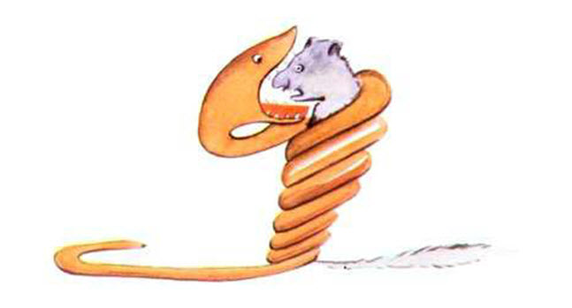

I am six years old. I see a nice picture. The picture is in a book. It is a picture of a big snake. The snake eats an animal. Here is the picture.
The book says, “Snakes eat the whole animal. And they sleep for six months.” I think about the life in the forest. I make my first picture. This is my picture number one.
I show my fantastic picture to one person. And I ask this person, “Are you scared?” This person answers, “How can I be scared? It is a hat.” My picture is not a picture of a hat. It is a picture of a big snake. An elephant is inside the snake. Then I make my picture number two. The picture shows the inside of the big snake. Now people understand. This is my picture number two.

People tell me what they think. They tell me that it is not good to make pictures. They tell me that it is better to study geography, history, maths and grammar. After these words, I don’t want to make pictures. I don’t want to make pictures because my picture number one and picture number two are not good for the people. People don’t understand simple things. And now, I am not a child. I am a big person. I have a job. I am a pilot. I fly planes. I fly in many countries. And it is true that geography is good for me. Geography can help me if I am lost in the night.